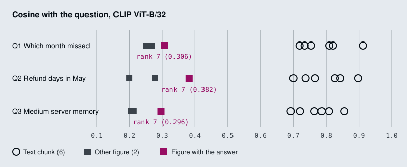

The running example is three pages of the Larkspur Cloud handbook from M11 to M13: availability, refunds and server plans. Each page has two short paragraphs and one figure, and the numbers are only in the figure. Three golden questions need them: Which month missed the 99.95% availability target? (May, at 99.91%, in Figure 1), How many business days did a refund take in May? (9, in Figure 2) and How much memory does the Medium server have? (8 GB, in Table 1). The lab indexes the three pages four ways with real models and ranks the results.
TL;DR
- Text extraction keeps “Figure 1 shows monthly availability…” and drops the bars. A text-only index of the three pages cannot reach any of the three answers at any
k. - CLIP embeds text and images into one space, but on these pages its text-to-text cosines run from 0.692 to 0.912 and its text-to-image cosines from 0.200 to 0.382. In one shared ranking the right figure is the best image for every question and still ranks 7 of 9, so
k = 3sends no figure at all. - Captioning turns each figure into text once, at index time. The captions rank 2, 1 and 1, and the model can answer from them only as far as the caption wrote the numbers down.
- Late interaction keeps one vector per query token and one per page patch, and scores a page by summing each token’s best match (MaxSim). ColSmol-256M, a small ColPali-family model, ranks the right page first for all three questions, at 1,139 vectors of 128 dimensions per page.
- Choose by what the model must read at answer time: a caption is cheap to store and search, while a page image keeps the chart, the table layout and the text together.
Mental model
- Handbook page 1 has two paragraphs and Figure 1. May’s 99.91% exists only in the bars.
- Text extraction keeps the paragraphs and drops the figure.
- CLIP embeds the text chunks and the figure image into one space.
- A vision model writes a caption with the values, embedded as text.
- A page-image model turns the whole page into 1,139 patch vectors.
- A customer asks “Which month missed the 99.95% availability target?”
- Each index ranks its items. CLIP puts the figure behind all six text chunks.
- At k = 3 the caption and the page reach the model. The CLIP figure does not.
The ranks are for Which month missed the 99.95% availability target? in the lab. Every route ends in the same place: the top-k items go to a model that can read what they hold, text, a caption or an image. What differs is whether the figure survives indexing, and whether it can outscore the text around it.
Joint embedding space
Lesson 21.1: Shared text–image embedding space with CLIP. Notebooks: 01a_multimodal_rag_with_clip.ipynb
CLIP has two encoders, one for text and one for images, trained together so that an image and a caption that describes it land close in the same vector space (Radford et al., Learning Transferable Visual Models From Natural Language Supervision, 2021). With openai/clip-vit-base-patch32, the notebook’s model, both encoders end in a 512-dimension vector. The notebook normalises each one to unit length, so a dot product is a cosine:
def embed_text(text):
inputs = clip_processor(text=text, return_tensors="pt", padding=True,
truncation=True, max_length=77) # CLIP's max token length
features = clip_model.get_text_features(**inputs)
return (features / features.norm(dim=-1, keepdim=True)).squeeze().numpy()
embed_image does the same with get_image_features. Indexing walks each PDF page with PyMuPDF: page.get_text() goes through a RecursiveCharacterTextSplitter (500 characters, overlap 100) and each chunk is embedded with embed_text; every image from page.get_images() is embedded with embed_image, stored as base64 for the answer model, and indexed as a stub Document "[Image: page_0_img_0]" with type: "image" in its metadata. All vectors go into one FAISS index through FAISS.from_embeddings(..., embedding=None). FAISS ranks by L2 distance, which on unit vectors orders results the same way as cosine.
At query time the question goes through embed_text, similarity_search_by_vector returns the top 5, and create_multimodal_message builds one HumanMessage for gpt-4.1: the text chunks as text parts, each retrieved image as an image_url part with a base64 data URL (M06 covers that format).
Both encoders have hard input limits, and both matter for documents:
- Text stops at 77 tokens. The splitter’s 500-character chunks run past that. Split the same way, page 2 of the Attention paper gives 11 chunks of 81 to 116 CLIP tokens, and even the sample PDF’s 365-character page is 79.
truncation=Truedrops the tail without a warning. CLIP was trained to match images with short captions, so a long paragraph is outside what it learned. - Images become 224 by 224. The processor scales the shortest side to 224 and crops the centre square. A 400 by 300 chart is scaled to 299 by 224 and loses about a quarter of its width, then the encoder reads it as 7 by 7 patches of 32 pixels. Small axis labels and printed values rarely survive that.
On the notebook’s own multimodal_sample.pdf the test cannot fail. The page holds one 365-character text chunk and one 400 by 300 image of three unlabelled bars, so the index has two items and k = 5 returns both for any question. The CLIP scores still show the pattern the next section is about: for What does the chart on page 1 show about revenue trends? the text chunk scores 0.651 and the chart 0.270.

One ranking, two modalities
The interactive lab indexes the three Larkspur pages with the notebook’s embed_text and embed_image: six text chunks and three figure images in one index, nine items. The scores split into two bands. Every text chunk scores between 0.692 and 0.912 against every question; every image scores between 0.200 and 0.382. Liang et al. measured this split across contrastive models and named it the modality gap (Mind the Gap, NeurIPS 2022).
Inside the image band, CLIP does its job. For each question the image with the answer is the best image:
| Question | Answer figure | Score | Best other image | Answer figure’s rank |
|---|---|---|---|---|
| Which month missed the 99.95% availability target? | Figure 1 | 0.306 | 0.268 | 7 of 9 |
| How many business days did a refund take in May? | Figure 2 | 0.382 | 0.277 | 7 of 9 |
| How much memory does the Medium server have? | Table 1 | 0.296 | 0.213 | 7 of 9 |
In the shared ranking that does not help. Each answer figure sits behind all six text chunks, so the notebook’s k = 5 sends five text chunks and no image, and the model never sees a bar. It takes k = 7 to reach the figure, and then the model reads six chunks of text to use one picture.
Scores from different modalities are not comparable, so do not rank them together:
- Separate quotas. Search text and images separately and send the top text chunks plus the top image. On the lab pages, top-1 image is the answer figure for all three questions.
- One modality. Turn figures into text (lesson 21.2) or text into images (lesson 21.3), so every score comes from the same comparison.
- A text model for text. Use a text embedding model (M14) for the chunks and keep CLIP for image search only; its 77-token text side is a weak paragraph retriever.
Key Takeaways
- CLIP puts text and images in one 512-dimension space, but its text side stops at 77 tokens and its image side crops to 224 by 224, so long chunks and small chart labels are lost.
- Text and image scores sit in separate bands (0.692 to 0.912 against 0.200 to 0.382 on the lab pages). In one shared ranking the right figure falls behind every text chunk.
- Do not rank modalities together. Use separate quotas for text and images, convert everything to one modality, or embed text with a text model.
Check yourself
1. Which two input limits make CLIP a weak retriever for document text and charts?
Text stops at 77 tokens, and the notebook’s 500-character chunks run past that; truncation=True drops the tail without a warning. Images become 224 by 224: a 400 by 300 chart loses about a quarter of its width to the centre crop and is read as 7 by 7 patches of 32 pixels, so small labels and printed values rarely survive.
2. For the availability question, the answer figure is the best image at 0.306, yet the notebook's k of 5 sends no image. Why?
Every text chunk scores between 0.692 and 0.912 and every image between 0.200 and 0.382, the modality gap. The answer figure ranks 7 of 9, behind all six text chunks. It takes k = 7 to reach it, and then the model reads six chunks of text to use one picture.
3. Should you fix the missing figure by raising k, or by something else?
By something else, because scores from different modalities are not comparable. Search text and images separately and send the top text chunks plus the top image; on the lab pages, the top image is the answer figure for all three questions. The alternatives are to put everything in one modality (captions or page images) or to use a text embedding model for the text.
Captioning
Lesson 21.2: Caption-then-index with a vision LLM. Notebooks: 02a_multimodal_rag_with_captioning.ipynb
Captioning moves the vision work to index time. A vision model looks at each figure once and writes text about it, and from then on the figure is a text chunk: the same embedder, the same vector store and the same retriever as the paragraphs around it.
flowchart LR
I[/"Figure image"/] --> V["Vision LLM<br/>caption prompt"]
V --> C["Caption text"]
C --> E["Text embedder"]
E --> X[("Index<br/>chunks and captions")]
Q[/Question/] --> E2["Same embedder"]
E2 --> X
The notebook builds it on the Attention paper (1706.03762v7.pdf):
- Extract. PyMuPDF reads each page’s text into one Document per page and saves every embedded image to
extracted_images/. - Caption.
gemini-1.5-flash, throughgoogle.generativeai, gets each image with the prompt “You are an assistant tasked with summarizing tables, images and text for retrieval. These summaries will be embedded and used to retrieve the raw text or table elements. Give a concise summary of the table or text that is well optimized for retrieval.” - Index. Page texts and captions both go through
RecursiveCharacterTextSplitter.from_tiktoken_encoder(chunk_size=400, chunk_overlap=50), are embedded with Cohereembed-english-v3.0, and share one Chroma collection. - Answer. The retriever returns
k = 1item, andcommand-r-plusat temperature 0 answers from it.
The cost lands once per image, at index time, and never per question. The index holds only text, so every tool from M14 to M19 still applies to captions: hybrid search, reranking, metadata filters.
The test question in the notebook never reaches a caption. PyMuPDF finds three raster images in the paper: Figure 1 on page 3 and the two images that make up Figure 2 on page 4. Figures 3 to 5 are not stored as images, so get_images() returns nothing for them. What is the BLEU score of the Transformer (base model)? is answered by Table 2 on page 8, which is text. get_text() returns it with the rows flattened, one cell per line (Transformer (base model), 27.3, 38.1, 3.3 · 1018), and the training cost 3.3 × 10^18 comes out as “1018”. The notebook’s system prompt also says “Answer the question based upon your knowledge”, which invites the model to answer from memory rather than from the retrieved chunk. To test captioning, ask about something only a figure shows.
On the Larkspur pages the interactive lab embeds the captions with all-MiniLM-L6-v2, the same model as the text chunks. The captions are representative, written the way a vision model following the notebook’s prompt would write them. Captions rank 2, 1 and 1 for the three questions. The first misses at k = 1 because the paragraph “Figure 1 shows monthly availability for April, May and June against the 99.95% target” repeats the question’s words and scores 0.747, against 0.693 for the caption. Captions compete with text chunks on one scale, so the ranking is fair, and a k of 2 or 3 sends both.
What a caption must hold
The notebook’s prompt asks for a summary “well optimized for retrieval”. Retrieval needs less than the answer does. With a short caption that names the chart and leaves out the values, such as “Bar chart of monthly availability in Q2 against a target line.”, the lab’s embedder still ranks it 2, 3 and 2 for the three questions. It is found, and it cannot answer: nothing in it says May or 99.91%.
Write the caption prompt for the questions the figure must answer:
- Every printed value, with its label and unit: “April 99.98%, May 99.91%, June 99.97%”.
- The title, axes and legend, and any reference line (“a dashed line marks the 99.95% target”).
- The figure’s place: document, page, figure number, so a citation can point at it.
- An explicit escape for anything unreadable, as M06 does with
[NOT_EXTRACTED], so the captioner leaves a gap instead of guessing.
A caption is model output, written once and then trusted on every query. If the vision model reads 8 GB as 16 GB, retrieval will find the wrong number with full confidence. The notebook already keeps the image file name in each caption’s metadata (name), which is enough to retrieve on the caption and then send the original image to a vision model at answer time. The caption then only has to be good enough to find the figure. Where a PDF has a real text layer, an element-level parser that returns each table as HTML (M12, lesson 12.4) keeps rows and columns that a caption has to describe in prose.
Key Takeaways
- Captioning pays the vision cost once per image at index time. Captions then compete with text chunks on one scale, and hybrid search, reranking and filters all still apply.
- A caption that names the chart is found but cannot answer. Prompt for every printed value with its label and unit, the axes and reference lines, the figure’s place, and an escape for unreadable parts.
- A caption is model output trusted on every query. Keep the image reference in metadata and send the original image to a vision model at answer time.
Check yourself
1. What does captioning move to index time, and what does that buy at query time?
A vision model looks at each figure once and writes text about it, so the cost lands once per image and never per question. From then on the figure is a text chunk with the same embedder, vector store and retriever as the paragraphs around it. Every tool from M14 to M19 still applies: hybrid search, reranking, metadata filters.
2. The caption Bar chart of monthly availability in Q2 against a target line ranks well for the availability question. Can it answer which month missed the target?
No. It is found but cannot answer, because nothing in it says May or 99.91%. Write the caption prompt for the questions the figure must answer: every printed value with its label and unit, the title, axes, legend and reference line, the figure’s place, and an explicit escape for anything unreadable.
3. The vision model reads 8 GB as 16 GB in a caption. How do you keep that wrong value out of answers?
Retrieve on the caption, then send the original image to a vision model at answer time; the notebook already keeps the image file name in each caption’s metadata (name). The caption then only has to be good enough to find the figure. Where the PDF has a real text layer, an element-level parser that returns tables as HTML (M12, lesson 12.4) avoids describing them in prose at all.
Late interaction
Lesson 21.3: Page-image retrieval with ColPali. Notebooks: 03a_multimodal_rag_with_colpali.ipynb (optional)
A single-vector retriever squeezes a chunk into one vector and a question into another, and compares them once. A cross-encoder (M19) reads question and chunk together, which is accurate and too slow to run over a whole index. Late interaction sits between them. It encodes the document and the question separately, as with single vectors, so documents can be encoded ahead of time. It keeps one vector per token instead of one per text, and compares them only at the end:
MaxSim(q, d) = sum over query vectors i of ( max over document vectors j of q_i · d_j )
Each query token finds the document vector it matches best, and the page score is the sum of those best matches. ColBERT introduced this for text passages (Khattab and Zaharia, SIGIR 2020). ColPali applies it to page images (Faysse et al., ColPali: Efficient Document Retrieval with Vision Language Models, 2024): a vision language model reads the rendered page, and every image patch gets its own vector.
- Indexing starts from the rendered page image, not from extracted text.
- The model turns the page into 1,139 vectors of 128 dimensions, one per patch or token.
- A customer asks “Which month missed the 99.95% availability target?”
- The question becomes 24 vectors: its 14 tokens and 10 tokens the processor appends.
- Each token keeps its best patch. “availability” scores 0.75 on page 1 and 0.25 on the other two.
- The 24 maxima add up to the page score, 15.95 for page 1.
- Page 1 leads page 2 by 6.21. Its image, chart included, goes to the model.
The figures in the diagram are real. The notebook’s vidore/colpali-v1.2 needs a GPU stack, so the lab pages were scored with vidore/colSmol-256M, a small model of the same family, through colpali_engine. Each 850 by 1100 page image became 1,139 vectors of 128 dimensions, and each question 24 vectors: its own tokens plus 10 <end_of_utterance> tokens the processor appends, which count in the sum like any other. score_multi_vector computes the formula above; a hand-written version matched it to within 2e-6.
For Which month missed the 99.95% availability target?, a few of the 24 per-token maxima:
| Query token | Page 1 (availability) | Page 2 (refunds) | Page 3 (server plans) |
|---|---|---|---|
month |
0.65 | 0.61 | 0.42 |
% |
0.73 | 0.45 | 0.22 |
availability |
0.75 | 0.25 | 0.25 |
target |
0.65 | 0.20 | 0.28 |
| 14 question tokens, summed | 9.04 | 6.80 | 3.89 |
| 10 appended tokens, summed | 6.91 | 2.94 | 2.93 |
| MaxSim score | 15.95 | 9.74 | 6.82 |
month scores 0.65 and 0.61 on pages 1 and 2, so it barely separates them. availability and target do: each finds a strong match on page 1 and nothing better than 0.28 elsewhere. One vector per page would have pooled those signals before the question was known; late interaction keeps them apart until it arrives.
Page-level retrieval
The unit of retrieval is the page, and the answer model receives the page as an image. Nothing is extracted, split or captioned, so a chart, a table’s grid and a scanned form arrive as they were printed. The notebook does it in four calls with byaldi:
RAG = RAGMultiModalModel.from_pretrained("vidore/colpali-v1.2", verbose=1)
RAG.index(input_path="../../../../data/sample/1706.03762v7.pdf", index_name="attention_is_all_you_need",
store_collection_with_index=True, overwrite=True)
results = RAG.search(query, k=1)
image_bytes = base64.b64decode(results[0].base64)
store_collection_with_index=True keeps a base64 copy of every page in the index, so search can return the image with the hit; each Result carries doc_id, page_num, score, metadata and base64. The notebook decodes the top page, saves it as image.jpg and passes it with the question to gemini-1.5-flash.
The source of byaldi 0.0.7 explains why the course marks this lesson platform-specific:
from_pretraineddefaults todevice="cuda". On a machine without CUDA, passdevice="mps"ordevice="cpu". byaldi loads ColPali weights in bfloat16.- PDFs go through
pdf2image.convert_from_path, which needs the poppler tools installed on the machine. - The Hugging Face token is read from the
hf_tokenargument or theHF_TOKENenvironment variable. The notebook setsos.environ["HF_token"], which byaldi never reads.
In the interactive lab, choose Page images. ColSmol ranks the right page first for all three questions, by clear margins: 15.95 against 9.74, 15.93 against 10.66, and 12.97 against 6.41. At k = 1 the model receives the page with the chart on it, so every answer is in what it reads. Some of page 1’s lead comes from its paragraph, which says “availability” and “target”; that is fine, because the page brings its chart along.
Pages cost more than chunks in three places:
- Storage. 1,139 vectors of 128 dimensions is 145,792 numbers per page, about 583 KB in float32. An
all-MiniLM-L6-v2chunk vector is 384 numbers. Lower precision, pooled patch vectors, or a cheap first stage with MaxSim only on its shortlist keep a large collection affordable. - Generation. Each hit sends a whole page image to a vision model, so
kstays small. - Granularity. A page with five topics is retrieved whole, and a citation can point only to the page.
Use page images where layout carries the meaning or there is no text layer: scans, slides, forms, dense tables. Text-heavy documents with a few charts are cheaper to serve with captions (lesson 21.2).
Key Takeaways
- Late interaction keeps one vector per query token and per page patch, and scores a page as the sum of each token’s best match. Pages are still encoded ahead of time.
- ColPali retrieves whole page images and sends them to a vision model, so charts, table grids and scans arrive as printed, with nothing extracted or captioned.
- Pages cost more in storage (about 583 KB per page in float32), in generation and in citation granularity. Use them for scans, slides, forms and dense tables; caption text-heavy documents instead.
Check yourself
1. How does MaxSim score a page, and what does it keep that one vector per page would lose?
Each query token finds the page vector it matches best, and the page score is the sum of those best matches. One vector per page would pool every signal before the question is known; late interaction keeps one vector per token or patch and compares them only at the end. Pages are still encoded ahead of time, unlike a cross-encoder.
2. For the availability question, the token month scores 0.65 on page 1 and 0.61 on page 2. Which tokens separate the pages, and what are the final scores?
availability and target: each scores 0.75 or 0.65 on page 1 and nothing better than 0.28 elsewhere. The MaxSim scores are 15.95 for page 1, 9.74 for page 2 and 6.82 for page 3. The 10 appended <end_of_utterance> tokens count in the sum like any other.
3. Your corpus is text-heavy reports with a few charts. Should you index page images with ColPali?
Probably not; captions are cheaper there. Pages cost more in storage (1,139 vectors of 128 dimensions, about 583 KB per page in float32), in generation (each hit sends a whole page image, so k stays small) and in granularity (a citation can point only to the page). Use page images where layout carries the meaning or there is no text layer: scans, slides, forms, dense tables.
Interactive lab
Four ways to index a chart: open the file in a browser. Start on CLIP joint space and slide k from 1 to 9: the figure stays below every text chunk until k = 7. Switch to Captions at k = 1 and watch the first question miss, because the figure note outscores the caption, then pass at k = 2. Then try Page images, where k = 1 answers all three.
How it connects
- Before: M06 shows how to put an image or a PDF page into a prompt, which is where every route here ends. M12 covers the loaders that drop figures, and M14 the text embeddings the caption route reuses. The lab reports against the M11 habit: fixed golden questions, the rank of the evidence, the cut at
k. - Next: M22 rebuilds pipelines in LlamaIndex. A multimodal index is one more retriever in the agentic RAG designs of M28 to M31.
Interview Spotlight: 5 Questions You Might Get Asked
Production questions of the kind asked in applied AI engineering interviews.
1. Larkspur moves its quarterly service report into the handbook as a PDF. Customers ask which month missed the availability target, and the assistant says the handbook does not say. The text pipeline has not changed. What happened, and how do you confirm it?
What a strong answer covers:
- Prints what the loader produced for that page: the paragraph that says “Figure 1 shows…” is there and the 99.91% is not, because the number exists only as pixels
- Checks the retrieved chunks: the figure note ranks first, so retrieval did its job on what it was given
- Counts how many golden questions need a figure, table or scan to answer, which sizes the fix
- Adds a figure route (captions or page images) and a figure-only question to the golden set so the regression stays caught
2. A teammate wants one CLIP index for the whole handbook, text and images together, because “one index is simpler”. What do you expect to happen, and what would you build instead?
What a strong answer covers:
- CLIP’s text-to-text scores sit far above its text-to-image scores (0.692 to 0.912 against 0.200 to 0.382 on the lab pages), so images lose every mixed ranking
- Retrieving with separate quotas, top text chunks plus the top image, fixes the crowding: on the lab pages the right figure is the top image for all three questions
- CLIP’s text encoder truncates at 77 tokens and was trained on captions, not paragraphs, so it is a weak text retriever as well
- Captions embedded with the text model, or page images, avoid comparing scores across modalities at all
3. You add captioning. How do you measure whether figure questions improved, and how do you watch it in production?
What a strong answer covers:
- A golden set split by evidence type (paragraph, figure, table, scan), with the rank of the evidence and answer correctness per split
- Compares against the text-only baseline on the same questions, as in the M11 lab
- Logs which retrieved items were captions and whether the answer quoted a number from one
- Re-captions and re-scores when the vision model or the caption prompt changes, since every caption is model output
4. A customer is told the Medium server has 16 GB. The table says 8 GB. Retrieval returned the right caption. What went wrong, and how do you guard against it?
What a strong answer covers:
- The caption itself is the suspect: a vision model can misread a row or a column, and nothing checks it after indexing
- Keeps the image id in the caption’s metadata and sends the original image to a vision model at answer time, using the caption only to find it
- Spot-checks captions that contain numbers against the source, or extracts tables with a table parser where the PDF has a text layer
- Adds the question to the golden set with its exact expected value
5. Compliance wants scanned contracts, with no text layer, searchable alongside the handbook. ColPali looks right. What does it cost, and how do you keep it practical?
What a strong answer covers:
- Page-level late interaction needs no OCR and keeps layout, which suits scans
- Storage grows with patches: ColSmol-256M stored 1,139 vectors of 128 dimensions per lab page, 145,792 floats or about 583 KB in float32, against one vector per chunk for a text index
- Reduces it with lower precision or pooled patch vectors, or uses a cheap first stage and MaxSim only to rerank its shortlist
- The answer model must read a whole page image per result, so
kstays small and the generation cost per question rises
Key Takeaways
- Check what the loader keeps before you tune anything: a number that only exists in a figure is not in a text index.
- Never let text and image vectors from CLIP compete in one top-
k; give each modality its own quota or turn images into text. - A caption answers only what it wrote down. Store the image id with it and send the image when the question needs exact values.
- Page images with late interaction keep everything on the page and need no OCR, and they cost many vectors per page and a vision call per answer.